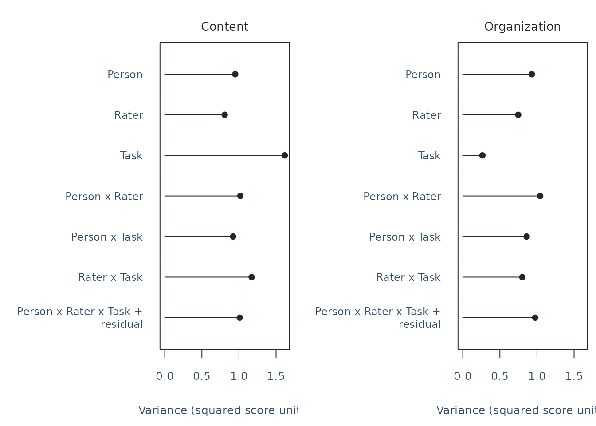
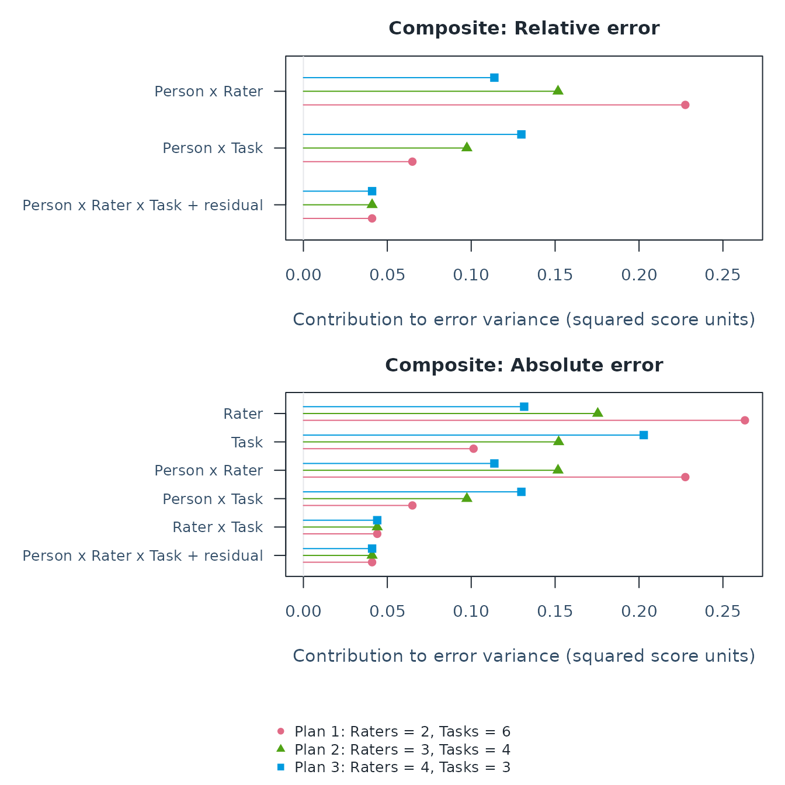
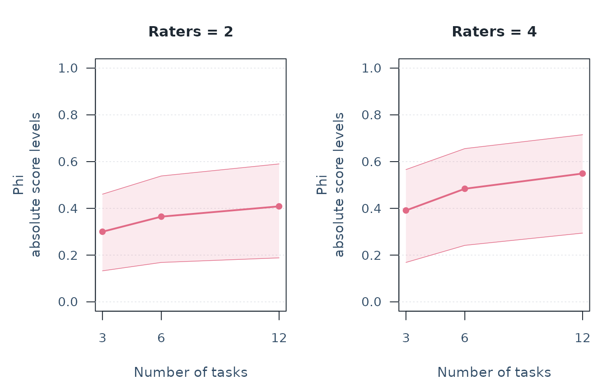
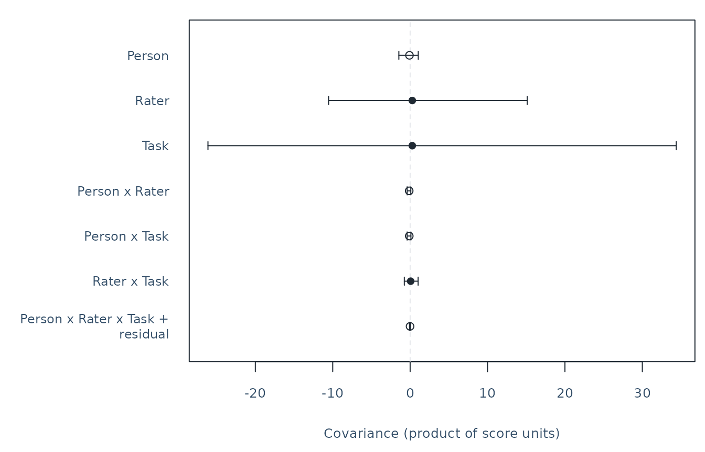
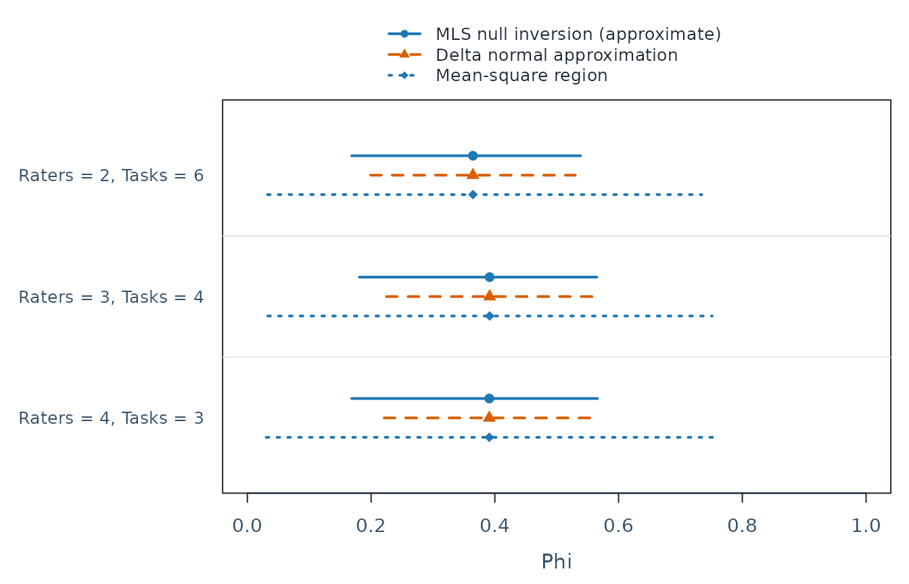
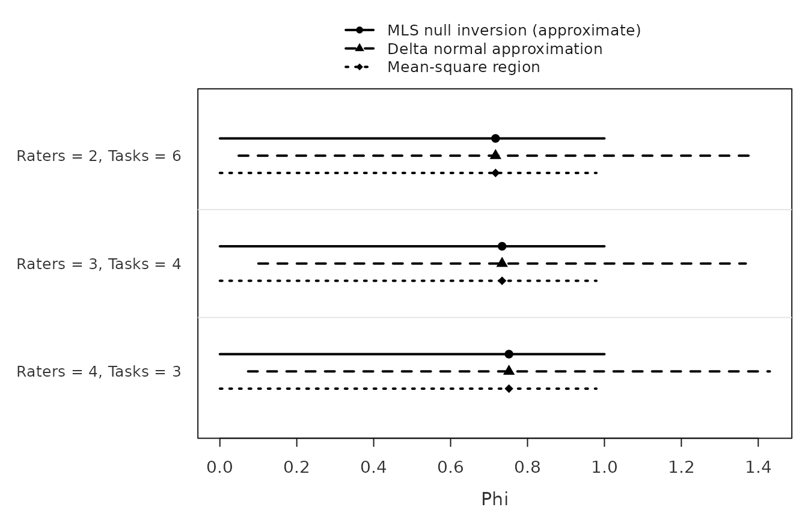
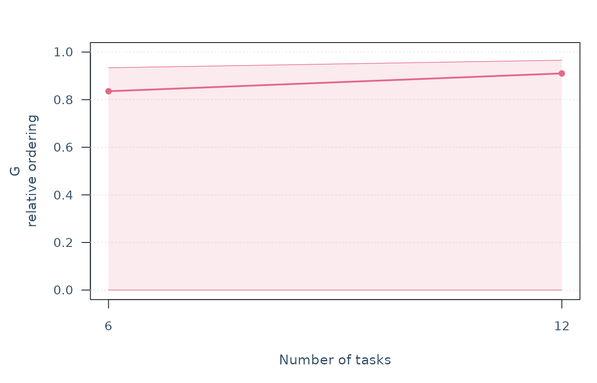

Would a speaking assessment benefit more from additional tasks or additional raters? A G-study estimates sources of variation in collected scores. A D-study uses those estimates to compare future plans you specify. This lesson follows that question through data, estimates, a figure, a paired comparison and saving the analysis. The later sections address other designs and method choices; they are not prerequisites for the first workflow.
Choose the analysis that matches your question:
| Question | Start here |
|---|---|
| How dependable is an observed score under a specified task/rater plan? | The G/D-study workflow below. No MFRM fit is needed. |
| How do severity and ordered rubric categories relate to a latent trait? | The measurement workflow, using appropriate ordered-response data. |
| Which rating patterns deserve feedback or review? | The agreement lesson and
mfrmr_output_guide("feedback"). Agreement, severity and
dependability answer different questions. |
MFRM simulation is another planning option, not a reason to run both analyses automatically. It evaluates a fitted-score or diagnostic procedure under an explicit response generator; G theory directly targets the dependability of the observed mean or composite over stated sampling conditions. Simulating more facets does not by itself define that score, its error components or its generalization population. The current simulation planner also has a Person/rater-like/criterion-like role boundary, rather than arbitrary numbers of facets. Read the workflow guide for the assumptions, differences and circumstances in which one route suffices.
Define the score and the population
Suppose a speaking assessment reports the equally weighted mean of Content and Organization scores. Tasks and raters are intended to be interchangeable with others from stated populations. The planned outcome is proficiency across those conditions, rather than performance on just one particular speech. Weights and the intended interpretation should be chosen before inspecting which plan has the highest coefficient.
This route analyzes numeric observed scores, including a single score or fixed combinations of several scores. It does not transform rubric categories into interval-scale measurements or estimate latent dimensions. Explain why your numeric score coding and averaging are meaningful. Calling a facet random declares a generalization population; the software does not randomly assign raters or establish that this assumption is appropriate.
Is a criterion a facet or a score?
Content and Organization can appear in the same rating sheet but play different statistical roles. Decide what will be reported and generalized before reshaping the sheet; long versus wide layout alone does not decide the model.
| Intended interpretation | Role of criteria | Route and consequence |
|---|---|---|
| One latent performance variable, adjusting for how demanding each criterion is | Criterion is a facet in an ordered-response MFRM |
fit_mfrm(..., facets = c("Rater", "Criterion")).
PCM/GPCM may give criteria their own steps/slopes, but still use one
Person variable. |
| Content and Organization are named scores, or fixed parts of a declared composite | Each criterion is a fixed score component |
mfrm_g_study(..., scores = c("Content", "Organization"), rater = "Rater", task = "Task").
Each source has a covariance matrix across scores. D-studies retain
those relations in the declared composite or contrast. |
| The criteria themselves are sampled, exchangeable conditions over which a single score should generalize | Criterion is a random measurement facet | A univariate G-study with scores = "Score" and a
justified facets mapping. The current API supports at most
two random measurement facets; Rater, Task and Criterion together exceed
this route. |
For two fixed scores and weights w, each source’s
composite variance is t(w) %*% Sigma %*% w, including
cross-score covariance. Separate univariate analyses followed by
averaging their reliability coefficients do not supply this result. The
multivariate distinction follows Brennan
(2003), Section 6. Neither a covariance component nor a
criterion-specific GPCM slope establishes another latent dimension.
The input to mfrm_d_study() also matters: passing a
G-study uses its full estimated component structure; passing an MFRM fit
invokes the separate mfrm_generalizability() main-effects
approximation with a combined-residual scaling rule. It does not recover
the interaction covariance matrices of the multivariate workflow. For
the planning question here, start from observed scores with
mfrm_g_study().
Declare each score’s units, endpoints and direction before choosing weights. If one score means ease and another means difficulty, their sum has a different meaning from a composite of two positively oriented qualities. Reverse-coding one score reverses its covariances with unreversed scores and can change composite precision. G/Phi being larger, and SEM smaller, concerns dependability of the declared score; it does not tell which end represents better performance.
Load ratings and inspect their design
Use the bundled synthetic teaching data. One row is one Person–Rater–Task cell; Content and Organization are the two scores for that cell. The same raters score every person’s work on every task: this is a crossed design.
library(mfrmr)
data("mfrmr_example_gtheory_crossed", package = "mfrmr")
ratings <- mfrmr_example_gtheory_crossed
head(ratings)
#> Person Rater Task Organization Content
#> 1 1 1 1 0.5045747 0.5475769
#> 2 2 1 1 1.3440571 -0.9615514
#> 3 3 1 1 -0.4715306 3.7099968
#> 4 4 1 1 -0.5425612 0.5795908
#> 5 5 1 1 -0.3337672 2.8174334
#> 6 6 1 1 1.6440213 0.1798085These are fictional continuous scores generated with independent
normal random effects, not empirical speech-contest records or ordered
MFRM responses. For your own similarly structured data, replace the
loading step with ratings <- read.csv("ratings.csv") and
identify the corresponding columns. Do not create zero scores for
unassigned or missing ratings. The default analysis requires a complete
balanced crossing; duplicate cells or missing selected scores require
attention rather than automatic averaging.
g <- mfrm_g_study(ratings, scores = c("Content", "Organization"),
person = "Person", rater = "Rater", task = "Task")
print(g, digits = 3)
#> Multivariate observed-score G-study
#> Complete crossed design: 40 persons, 8 raters, 6 tasks
#> Balanced multivariate ANOVA; highest-order interaction and residual are combined.
#> Rows: 1920 used of 1920 ; 0 explicitly omitted.
#> Source MinimumScaledEigenvalue Tolerance PositiveSemidefinite Rank
#> Person 0.1294 1.49e-08 TRUE 2
#> Rater 0.0799 1.49e-08 TRUE 2
#> Task 0.0381 1.49e-08 TRUE 2
#> Person:Rater 0.1371 1.49e-08 TRUE 2
#> Person:Task 0.1214 1.49e-08 TRUE 2
#> Rater:Task 0.1420 1.49e-08 TRUE 2
#> Residual 0.1428 1.49e-08 TRUE 2
#> Dimension
#> 2
#> 2
#> 2
#> 2
#> 2
#> 2
#> 2
#> Raw covariance components are retained; this table shows point estimates.
#> Use confint(x, assumption = 'normal') for eligible score-component SEs and intervals.The output identifies 40 persons, eight raters and six tasks in this source study. Check the counts, row exclusions and component diagnostics before interpreting results. A non-positive-semidefinite component matrix flags a problem with the estimated joint variance structure; it is retained for review. The flag is not a reason to silently replace a negative estimate with zero.
Inspect the sources of variation
Compare the score components on shared axes. These are variances in squared score units, not percentages or reliability coefficients. Comparing their sizes across scores requires comparable score units.

Person variation represents differences between people. Person-by-Rater variation means that rater differences vary across people; Rater-by-Task means that rater differences vary across tasks. There is one observation per cell, so the highest interaction and other residual variation are combined as Person x Rater x Task + residual. They are included, not estimated separately or assumed to be zero.
The residual component is only one source of measurement error. Under
this common crossed design, Person interactions and the combined
residual contribute to relative error; rater/task-wide shifts
additionally affect absolute score levels. Future counts reduce
different error components in different ways. A component plot alone
therefore does not identify the best plan. The exact divisors and
composite-covariance formulas are in mfrm_d_study().
Use plot_data(components, "table") for the plotted values
and plot_data(components, "notes") for their interpretation
notes.
Compare feasible assessment plans
Prespecify three plans with twelve ratings per person: two raters and six tasks, three and four, or four and three. Six tasks require more performances than three tasks; equal rating counts do not imply equal time, burden or cost.
plans <- data.frame(Raters = c(2, 3, 4), Tasks = c(6, 4, 3))
d <- mfrm_d_study(g, design_grid = plans,
weights = c(Content = .5, Organization = .5))
s <- summary(d, intervals = TRUE, parm = c("G", "Phi"), assumption = "normal")
print(s, digits = 3)
#> Assessment plans with source-study uncertainty
#> Source G-study: Balanced multivariate ANOVA
#> Observed level counts (not future replication): Person = 40, Rater = 8, Task = 6
#> Source rows: 1920 used of 1920 ; 0 explicitly omitted.
#> Future complete balanced plans; counts apply to every person and score.
#> Intervals assume independent normal random effects; the assumption is not tested.
#> Nominal confidence level(s): 0.95
#> Means over common random raters and tasks
#> Composite weights (not normalized):
#> Content Organization
#> 0.5 0.5
#> Scenario Raters Tasks Kind Score Metric Estimate Lower Upper Level
#> 1 2 6 Composite Composite G 0.561 0.410 0.706 0.95
#> 2 3 4 Composite Composite G 0.595 0.445 0.734 0.95
#> 3 4 3 Composite Composite G 0.599 0.449 0.738 0.95
#> 1 2 6 Composite Composite Phi 0.365 0.169 0.539 0.95
#> 2 3 4 Composite Composite Phi 0.392 0.181 0.565 0.95
#> 3 4 3 Composite Composite Phi 0.391 0.169 0.566 0.95
#> MethodCode
#> mls
#> mls
#> mls
#> mls
#> mls
#> mls
#> Methods and qualifications:
#> MethodCode Method
#> mls MLS null inversion (approximate)
#> Validation
#> Normal-model MLS approximation; not exact or distribution robust
#> G/Phi are dimensionless; SEM is in score units. Available describes calculation, not coverage.
#> For differences, positive G/Phi and negative SEM favor the comparison plan.
#> Method assumptions and limitations: $notes; complete saved results: $intervals.These are projections for future complete plans, not
scores already observed under those plans. Read estimates and intervals
with their method qualifications and any rows needing review.
assumption = "normal" asserts independent normal random
effects; it does not test the assumption. Here parm selects
G and Phi to focus on dependability. To include both measurement SEM
intervals as well, omit parm from the summary call.
| Metric | Meaning | Favorable direction for the same score and population |
|---|---|---|
G |
Dependability of relative ordering | Larger |
Phi |
Dependability of absolute score levels, including task/rater-wide shifts | Larger |
RelativeSEM |
Measurement error in score units for relative decisions | Smaller |
AbsoluteSEM |
Measurement error in score units for absolute decisions | Smaller |
Neither coefficient is a probability of a correct pass/fail decision or of identifying a contest winner. An interval around SEM describes uncertainty in population measurement error, not an interval for an individual’s score. A more varied person population can have higher G without smaller SEM.
For this balanced two-crossed-facet source, the default G/Phi
intervals use an MLS approximation. It can return wide intervals, and
FormulaComplete = FALSE flags conservatively retained
regions where the underlying width formula is undefined. SEM uses a
separate error-variance construction. Availability is not proof of
accurate coverage. Keep the qualifications in s$notes; the
full estimates and statuses are in s$table.
Explain which error sources change
The same twelve ratings can produce different error because increasing raters and increasing tasks reduce different components. The next figure reuses the three plans and their equal-weight composite. Each color identifies a complete plan, and each point shows one source’s contribution to its error variance.
errors <- plot(d, type = "error_components")
plot_data(errors, "table") # Divisors, variance and covariance contributions.
#> Scenario Raters Tasks Kind Score Metric Panel
#> 1 1 2 6 Composite Composite RelativeErrorVariance 1
#> 2 1 2 6 Composite Composite RelativeErrorVariance 1
#> 3 1 2 6 Composite Composite RelativeErrorVariance 1
#> 4 2 3 4 Composite Composite RelativeErrorVariance 1
#> 5 2 3 4 Composite Composite RelativeErrorVariance 1
#> 6 2 3 4 Composite Composite RelativeErrorVariance 1
#> 7 3 4 3 Composite Composite RelativeErrorVariance 1
#> 8 3 4 3 Composite Composite RelativeErrorVariance 1
#> 9 3 4 3 Composite Composite RelativeErrorVariance 1
#> 10 1 2 6 Composite Composite AbsoluteErrorVariance 2
#> 11 1 2 6 Composite Composite AbsoluteErrorVariance 2
#> 12 1 2 6 Composite Composite AbsoluteErrorVariance 2
#> 13 1 2 6 Composite Composite AbsoluteErrorVariance 2
#> 14 1 2 6 Composite Composite AbsoluteErrorVariance 2
#> 15 1 2 6 Composite Composite AbsoluteErrorVariance 2
#> 16 2 3 4 Composite Composite AbsoluteErrorVariance 2
#> 17 2 3 4 Composite Composite AbsoluteErrorVariance 2
#> 18 2 3 4 Composite Composite AbsoluteErrorVariance 2
#> 19 2 3 4 Composite Composite AbsoluteErrorVariance 2
#> 20 2 3 4 Composite Composite AbsoluteErrorVariance 2
#> 21 2 3 4 Composite Composite AbsoluteErrorVariance 2
#> 22 3 4 3 Composite Composite AbsoluteErrorVariance 2
#> 23 3 4 3 Composite Composite AbsoluteErrorVariance 2
#> 24 3 4 3 Composite Composite AbsoluteErrorVariance 2
#> 25 3 4 3 Composite Composite AbsoluteErrorVariance 2
#> 26 3 4 3 Composite Composite AbsoluteErrorVariance 2
#> 27 3 4 3 Composite Composite AbsoluteErrorVariance 2
#> Plan Source SourceLabel
#> 1 Plan 1: Raters = 2, Tasks = 6 Person:Rater Person x Rater
#> 2 Plan 1: Raters = 2, Tasks = 6 Person:Task Person x Task
#> 3 Plan 1: Raters = 2, Tasks = 6 Residual Person x Rater x Task + residual
#> 4 Plan 2: Raters = 3, Tasks = 4 Person:Rater Person x Rater
#> 5 Plan 2: Raters = 3, Tasks = 4 Person:Task Person x Task
#> 6 Plan 2: Raters = 3, Tasks = 4 Residual Person x Rater x Task + residual
#> 7 Plan 3: Raters = 4, Tasks = 3 Person:Rater Person x Rater
#> 8 Plan 3: Raters = 4, Tasks = 3 Person:Task Person x Task
#> 9 Plan 3: Raters = 4, Tasks = 3 Residual Person x Rater x Task + residual
#> 10 Plan 1: Raters = 2, Tasks = 6 Rater Rater
#> 11 Plan 1: Raters = 2, Tasks = 6 Task Task
#> 12 Plan 1: Raters = 2, Tasks = 6 Person:Rater Person x Rater
#> 13 Plan 1: Raters = 2, Tasks = 6 Person:Task Person x Task
#> 14 Plan 1: Raters = 2, Tasks = 6 Rater:Task Rater x Task
#> 15 Plan 1: Raters = 2, Tasks = 6 Residual Person x Rater x Task + residual
#> 16 Plan 2: Raters = 3, Tasks = 4 Rater Rater
#> 17 Plan 2: Raters = 3, Tasks = 4 Task Task
#> 18 Plan 2: Raters = 3, Tasks = 4 Person:Rater Person x Rater
#> 19 Plan 2: Raters = 3, Tasks = 4 Person:Task Person x Task
#> 20 Plan 2: Raters = 3, Tasks = 4 Rater:Task Rater x Task
#> 21 Plan 2: Raters = 3, Tasks = 4 Residual Person x Rater x Task + residual
#> 22 Plan 3: Raters = 4, Tasks = 3 Rater Rater
#> 23 Plan 3: Raters = 4, Tasks = 3 Task Task
#> 24 Plan 3: Raters = 4, Tasks = 3 Person:Rater Person x Rater
#> 25 Plan 3: Raters = 4, Tasks = 3 Person:Task Person x Task
#> 26 Plan 3: Raters = 4, Tasks = 3 Rater:Task Rater x Task
#> 27 Plan 3: Raters = 4, Tasks = 3 Residual Person x Rater x Task + residual
#> Multiplier ComponentVariance DiagonalContribution CovarianceContribution
#> 1 0.50000000 0.4551850 0.25768671 -0.0300942347
#> 2 0.16666667 0.3896730 0.07422296 -0.0092774610
#> 3 0.08333333 0.4912697 0.04139078 -0.0004516322
#> 4 0.33333333 0.4551850 0.17179114 -0.0200628231
#> 5 0.25000000 0.3896730 0.11133443 -0.0139161916
#> 6 0.08333333 0.4912697 0.04139078 -0.0004516322
#> 7 0.25000000 0.4551850 0.12884335 -0.0150471174
#> 8 0.33333333 0.3896730 0.14844591 -0.0185549221
#> 9 0.08333333 0.4912697 0.04139078 -0.0004516322
#> 10 0.50000000 0.5262016 0.19434253 0.0687582847
#> 11 0.16666667 0.6084245 0.07836014 0.0230439447
#> 12 0.50000000 0.4551850 0.25768671 -0.0300942347
#> 13 0.16666667 0.3896730 0.07422296 -0.0092774610
#> 14 0.08333333 0.5279787 0.04109117 0.0029070552
#> 15 0.08333333 0.4912697 0.04139078 -0.0004516322
#> 16 0.33333333 0.5262016 0.12956169 0.0458388565
#> 17 0.25000000 0.6084245 0.11754021 0.0345659170
#> 18 0.33333333 0.4551850 0.17179114 -0.0200628231
#> 19 0.25000000 0.3896730 0.11133443 -0.0139161916
#> 20 0.08333333 0.5279787 0.04109117 0.0029070552
#> 21 0.08333333 0.4912697 0.04139078 -0.0004516322
#> 22 0.25000000 0.5262016 0.09717127 0.0343791424
#> 23 0.33333333 0.6084245 0.15672028 0.0460878893
#> 24 0.25000000 0.4551850 0.12884335 -0.0150471174
#> 25 0.33333333 0.3896730 0.14844591 -0.0185549221
#> 26 0.08333333 0.5279787 0.04109117 0.0029070552
#> 27 0.08333333 0.4912697 0.04139078 -0.0004516322
#> Contribution TotalErrorVariance SEMStatus
#> 1 0.22759248 0.3334771 Available
#> 2 0.06494549 0.3334771 Available
#> 3 0.04093914 0.3334771 Available
#> 4 0.15172832 0.2900857 Available
#> 5 0.09741824 0.2900857 Available
#> 6 0.04093914 0.2900857 Available
#> 7 0.11379624 0.2846264 Available
#> 8 0.12989099 0.2846264 Available
#> 9 0.04093914 0.2846264 Available
#> 10 0.26310082 0.7419802 Available
#> 11 0.10140408 0.7419802 Available
#> 12 0.22759248 0.7419802 Available
#> 13 0.06494549 0.7419802 Available
#> 14 0.04399823 0.7419802 Available
#> 15 0.04093914 0.7419802 Available
#> 16 0.17540054 0.6615906 Available
#> 17 0.15210613 0.6615906 Available
#> 18 0.15172832 0.6615906 Available
#> 19 0.09741824 0.6615906 Available
#> 20 0.04399823 0.6615906 Available
#> 21 0.04093914 0.6615906 Available
#> 22 0.13155041 0.6629832 Available
#> 23 0.20280817 0.6629832 Available
#> 24 0.11379624 0.6629832 Available
#> 25 0.12989099 0.6629832 Available
#> 26 0.04399823 0.6629832 Available
#> 27 0.04093914 0.6629832 Available
plot_data(errors, "totals") # Original totals, SEM, G/Phi and availability.
#> Scenario Raters Tasks Kind Score UniverseVariance
#> 3 1 2 6 Composite Composite 0.425785
#> 6 2 3 4 Composite Composite 0.425785
#> 9 3 4 3 Composite Composite 0.425785
#> RelativeErrorVariance AbsoluteErrorVariance G Phi RelativeSEM
#> 3 0.3334771 0.7419802 0.5607879 0.3646152 0.5774748
#> 6 0.2900857 0.6615906 0.5947792 0.3915712 0.5385960
#> 9 0.2846264 0.6629832 0.5993499 0.3910704 0.5335039
#> AbsoluteSEM Status GStatus PhiStatus RelativeSEMStatus AbsoluteSEMStatus
#> 3 0.8613827 Available Available Available Available Available
#> 6 0.8133822 Available Available Available Available Available
#> 9 0.8142378 Available Available Available Available Available
#> ComponentPSD ComponentTreatment
#> 3 TRUE raw
#> 6 TRUE raw
#> 9 TRUE rawFor example, Person-by-rater variance is divided by the number of
raters, whereas Person-by-task variance is divided by the number of
tasks. The highest interaction and residual share a component divided by
their product. Absolute error additionally includes rater/task-wide
shifts. The composite uses the full covariance matrices:
DiagonalContribution retains weighted within-score
variances, and CovarianceContribution retains cross-score
terms. Their sum is the plotted Contribution.
These contributions add to error variance, not SEM;
SEM is the square root of the total. Negative estimates remain signed
and are not interpreted as negative population variances. Read
totals for any unavailable metric. This plot describes
point projections without confidence intervals; it does not establish
that one allocation is statistically better or less costly. For nested
designs, the plot labels child counts per parent, and
uses the corresponding nested divisors.
Read a planning curve
For a curve, vary tasks while keeping raters fixed within each panel. The following grid reuses the same G-study and score weights. Its six combinations are different from the three equal-rating-count plans above.
d_grid <- mfrm_d_study(g,
expand.grid(Raters = c(2, 4), Tasks = c(3, 6, 12)),
weights = c(Content = .5, Organization = .5))
p <- plot(d_grid, metric = "Phi", x_var = "Tasks", panel_by = "Raters",
ncol = 2, intervals = TRUE, assumption = "normal", preset = "standard")
Within a panel, follow the curve to examine adding tasks. Across panels, compare the same task count to examine adding raters. More future ratings reduce projected error but do not add information to the source study. Ribbons connect intervals at requested counts; they do not evaluate intermediate plans or provide simultaneous confidence bands. Interval overlap is not a paired comparison of plans.
The sparse grid above illustrates a few plans, not a software restriction. For every integer count in a feasible range, reuse the same G-study:
d_fine <- mfrm_d_study(g,
expand.grid(Raters = c(2, 4), Tasks = 1:12),
weights = c(Content = .5, Organization = .5))
plot(d_fine, metric = "Phi", x_var = "Tasks", panel_by = "Raters",
ncol = 2, preset = "standard")This evaluates 24 specified plans, retaining two rater counts for
readability. Using Raters = 1:8 instead would evaluate 96
plans. It does not refit the G-study or improve the precision of its
estimated components. Add
intervals = TRUE, assumption = "normal" when pointwise
ribbons answer the question. More plans can cost more for numerical
interval methods and make a visually selected optimum unstable; examine
feasible workload and uncertainty rather than maximizing a plotted
coefficient.
Use preset = "monochrome" for black-and-white output. To
compare original scores, select
score = c("Content", "Organization"); score colors also
have distinct line types and point shapes. Optional panel and score
selections are explained in plot(d).
No title or explanatory footnote is placed inside the figure. Read the
saved notes with plot_data(p, "notes") and the exact values
with plot_data(p); preserve them when sharing the
figure.
Ask about a change, not just two separate intervals
The three equal-rating-count plans share the same estimated components. Use a paired procedure to ask how much a candidate improves on the first plan, rather than subtracting marginal interval endpoints or treating plans as independent. For this two-crossed-facet example, the existing paired delta method gives approximate intervals for G/Phi and SEM differences.
comparison <- mfrm_multivariate_d_compare(d, reference = 1,
assumption = "normal")
print(comparison, digits = 3)
#> D-study differences from reference scenario 1
#> Source G-study: Balanced multivariate ANOVA
#> Observed level counts (not future replication): Person = 40, Rater = 8, Task = 6
#> Source rows: 1920 used of 1920 ; 0 explicitly omitted.
#> Composite: Composite
#> Composite weights (not normalized):
#> Content Organization
#> 0.5 0.5
#> Future complete crossed plans; counts apply to every person and score.
#> Means over common random raters and tasks
#> Raters Tasks
#> 2 6
#> 3 4
#> 4 3
#> Reference Scenario Kind Score Metric ReferenceValue Value
#> 1 2 Composite Composite G 0.561 0.595
#> 1 2 Composite Composite Phi 0.365 0.392
#> 1 2 Composite Composite RelativeSEM 0.577 0.539
#> 1 2 Composite Composite AbsoluteSEM 0.861 0.813
#> 1 3 Composite Composite G 0.561 0.599
#> 1 3 Composite Composite Phi 0.365 0.391
#> 1 3 Composite Composite RelativeSEM 0.577 0.534
#> 1 3 Composite Composite AbsoluteSEM 0.861 0.814
#> Difference Status SE Lower Upper
#> 0.0340 Available 0.00595 0.0223 0.0456
#> 0.0270 Available 0.02068 -0.0136 0.0675
#> -0.0389 Available 0.00696 -0.0525 -0.0252
#> -0.0480 Available 0.03810 -0.1227 0.0267
#> 0.0386 Available 0.01041 0.0182 0.0590
#> 0.0265 Available 0.03714 -0.0463 0.0992
#> -0.0440 Available 0.01193 -0.0674 -0.0206
#> -0.0471 Available 0.06602 -0.1765 0.0822
#> 95% approximate pointwise intervals; normal random effects required.
#> Positive G/Phi or negative SEM differences favor the comparison plan.
#> An interval containing zero does not establish equivalence.Each difference is the candidate minus the two-rater/six-task
reference. Positive G/Phi and negative SEM favor the candidate.
SE describes sampling uncertainty in the difference; it is
not measurement SEM. An interval containing zero leaves the direction
uncertain and does not establish equivalence.
In these synthetic data, three raters and four tasks improve G by about 0.034, with an approximate 95% interval of [0.022, 0.046]. The corresponding Phi improvement is about 0.027, with an interval of [-0.014, 0.067]. Thus the data support improved relative ordering under the model, while the direction of the absolute-score change remains uncertain. Cost-effectiveness and the best plan for a different assessment do not follow from these results.
These intervals are pointwise for prespecified comparisons. Small facet pools, component boundaries, nonnormal effects and uneven assignments can impair the approximation. Selecting a winner after inspecting many plans is not protected by these intervals. This paired delta method does not apply to one-facet or nested designs; see the branches below and the comparison help.
Save the result and know which operation to use
| Operation | What it does | Does it calculate new intervals? |
|---|---|---|
print(d) |
Displays source/future counts, score weights and point projections;
returns d invisibly |
No |
summary(d) |
Returns the coefficient data frame | No |
summary(d, intervals = TRUE, assumption = "normal") |
Collects supported intervals, methods, context and notes | Yes, explicitly |
confint(d, parm = "Phi", assumption = "normal") |
Returns one metric’s interval table with method attributes | Yes |
print(s) or s$table
|
Displays the saved summary or accesses its full data frame | No |
plot(d) |
Draws point projections; returns plot data invisibly | No, unless intervals = TRUE is requested |
plot(s$intervals$Phi) |
Draws a forest from the saved Phi intervals | No |
saveRDS() / readRDS()
|
Saves/reopens complete objects, including notes and diagnostics | No |
print(..., digits = 3) changes display precision, not
stored estimates. A summary list is not a new plotting input: use the
D-study or its saved interval objects. To reuse intervals in a curve,
pass them to
plot(d, metric = "Phi", intervals = s$intervals$Phi). The
source, plans and weights must match; intervals for d
cannot be attached to d_grid.
Save the complete analysis, including the decision context. Full G-study objects include analyzed ratings and identifiers; choose an appropriate storage location. The temporary path below keeps this example runnable; replace it with a file in your project for lasting storage.
analysis <- list(study = d, summary = s, comparison = comparison, plot = p,
decisions = list(score = "Equal-weight Content/Organization mean",
comparison = "Twelve ratings per person; task burden and costs differ",
assumption = "Independent normal random effects"))
result_file <- tempfile(fileext = ".rds")
saveRDS(analysis, result_file)
reopened <- readRDS(result_file)
identical(reopened$summary, s) # TRUE: the full summary was preserved.
#> [1] TRUEIn another session, load mfrmr and read that file. Reuse
the plot’s stored values with as_ggplot(reopened$plot) if
ggplot2 is installed. A CSV of s$table is useful for a
report, but loses the separate weights, notes and numerical diagnostics.
Changing future counts requires a new D-study; changing the source data
or model requires a new G-study.
Report the assessment-planning answer
Use a compact Methods/Results structure, retaining the full analysis above:
| Section | Content to supply | Existing output |
|---|---|---|
| Question and score | Intended use, relative ordering or absolute decision, fixed score components, directions and weights | Study records; d$weights
|
| Source design | Population of persons and random conditions, crossing/nesting, planned and retained counts, missingness, estimator and negative-component policy |
g$design, g$data_usage,
g$estimation, component diagnostics |
| Sources of variation | Relevant variances and cross-score covariances, uncertainty and combined residual terms |
g$components, plot(g) and eligible
confint(g)
|
| Future plans | Specified counts, score, G/Phi and relative/absolute SEM; assumptions and interval qualifications |
summary(d) or saved s$table; planning and
error-component plots |
| Answer | Magnitude and uncertainty of the prespecified plan difference; workload/cost tradeoff and limits | Saved mfrm_multivariate_d_compare() result and the
substantive interpretation |
For example: “For [defined score and population], increasing [raters/tasks] from [a] to [b] changed projected [metric] by [estimate], with [method/level] interval [limits]. This projection assumes [design and model]; [cost or uncertainty] limits the recommendation.” Use unavailable-result reasons when an interval cannot be reported. A larger source Person variance can increase G without reducing error; state SEM alongside coefficients when precision matters.
Pass the saved results directly to the shared report API. The report preserves signed components, observed counts, future plans, fixed weights, G/Phi, error variances and SEM. Supplied intervals are checked against their source; omitted intervals remain explicitly not requested.
report <- mfrm_report(d, intervals = s$intervals, style = "apa")
bundle <- build_summary_table_bundle(report)
apa_table(report, which = "coefficients")
export_summary_appendix(bundle, output_dir = "planning-report")
saveRDS(report, "planning-report/report.rds")
# A complete editable manuscript starting point, using bundled data:
template <- system.file("templates", "gtheory-report.Rmd", package = "mfrmr")
file.copy(template, "gtheory-report.Rmd")
rmarkdown::render("gtheory-report.Rmd")If no intervals were computed, use mfrm_report(d);
reporting never starts a new uncertainty calculation.
mfrm_report(g, intervals = component_ci) accepts current
saved component intervals. mfrm_report(comparison)
preserves a paired-delta comparison and its sampling covariance. The
installed template joins these reports with component, planning and SEM
figures, CSV/HTML and a complete RDS. Complete its rubric direction,
sampling, decision and cost prompts before using the prose in a
manuscript.
Brennan’s Coefficients and Indices in Generalizability Theory (2003, CASMA Research Report 1) motivates reporting error variances alongside coefficients. Jiang et al. (2022) study uncertainty in G coefficients under specified designs. These sources support the reporting questions; they do not certify every current interval approximation.
Adapt the question to another setting
The same role definitions can describe other judged performances. These are mappings of the analysis design, not additional empirical datasets or evidence that the method is valid in every domain.
| Setting | Rated unit | Possible random measurement facets | Fixed score components |
|---|---|---|---|
| Speech assessment | A speaker across sampled performances | Rater and task | Content, organization or other justified rubric scores |
| Music assessment | A performer across pieces | Judge and piece | Technique and expression |
| Judged sport | An athlete across routines | Judge and routine | Technical and artistic scores under the scoring rules |
Use the column-mapping arguments in mfrm_g_study().
Changing labels does not change the statistical design. This route
supports one or two random measurement facets; several score columns are
fixed components, not extra facets. Define whether the target is one
particular performance or a person across performances. Keeping all
pieces fixed, using different judges for each athlete, or studying a
time trend changes the target or supported design. Race times and match
outcomes do not automatically fit a judged-performance model. Annual
speech-contest linking with common recordings also requires the separate
linking design.
Examine a construct claim
Suppose the intended interpretation treats Content and Organization as related aspects of speaking performance. One expectation to specify before analyzing empirical data is positive Person covariance: speakers who tend to score higher on one criterion across the defined tasks and raters also tend to score higher on the other. Task or rater covariance would answer a different question. The synthetic data below illustrate how to examine that expectation, including an inconclusive result; they do not validate a speaking construct.
Start with the Person matrix. Its diagonal contains variances; its off-diagonal entries are covariances, not correlations:
g$components$Person
#> Content Organization
#> Content 0.94929920 -0.08845568
#> Organization -0.08845568 0.93075196Inspect uncertainty and the other sources on one common axis. Here we explicitly choose the conservative normal-model enclosure: it preserves signed covariance and requires no simulation, but can be very wide with few facet levels. It is one documented method, not an automatically preferred choice for every study.
relations <- plot(g, type = "covariance", score = c("Content", "Organization"),
intervals = TRUE, method = "regression_region", assumption = "normal")
The full range stays visible. Use the table to read components whose bars are compressed by the widest intervals; the figure does not truncate them.
relation_intervals <- plot_data(relations, "intervals")[[1]]
relation_intervals[, c("Source", "Estimate", "Lower", "Upper", "Status")]
#> Source Estimate Lower Upper
#> 1 Person -0.08845568 -1.45638712 1.04755310
#> 2 Rater 0.27503314 -10.53698613 15.12222797
#> 3 Task 0.27652734 -26.12039170 34.37797583
#> 4 Person:Rater -0.12037694 -0.38944527 0.08779035
#> 5 Person:Task -0.11132953 -0.39262953 0.10123469
#> 6 Rater:Task 0.06976932 -0.75129024 1.02779311
#> 7 Residual -0.01083917 -0.07753328 0.05387609
#> Status
#> 1 Conservative normal-model interval
#> 2 Conservative normal-model interval
#> 3 Conservative normal-model interval
#> 4 Conservative normal-model interval
#> 5 Conservative normal-model interval
#> 6 Conservative normal-model interval
#> 7 Conservative normal-model intervalThe Person covariance is about -0.088, with a conservative interval of approximately [-1.456, 1.048]. These data and this method do not resolve a positive population relation. They also do not establish independence, a negative relation, or distinct latent dimensions. Every source interval here includes zero; an imprecise result should remain inconclusive.
The positive Rater and Task point estimates describe shared shifts in the two scores across raters and tasks. They do not identify an impression spreading between criteria. Person-by-Rater and Person-by-Task terms describe shifts that depend on the person; the last component still combines the highest interaction and residual variation. Sampling uncertainty and the source model limit each interpretation. These are pointwise intervals, not a test comparing components or a simultaneous guarantee across them.
A report could state: “The proposed positive relation between Content and Organization was unresolved by the Person covariance interval. The analysis does not establish separate dimensions or a rater-impression effect.” For empirical data, add the relevant task/rubric evidence and, where required by the claim, evidence about scoring processes or external measures. Do not change the composite weights simply to make G/Phi larger. The methods guide connects this reasoning to measurement diagnostics and feedback, and cites the Standards (2014, Standards 1.13–1.14) and Kane (2013).
Retain the covariance figure and its full table with the same source:
Other designs and uncertainty questions
Read the branch that matches your data. The first workflow does not require running all of these analyses.
Common tasks without a rater facet
The packaged mGENOVA example contains published synthetic scores V and W for ten persons and six common tasks. The future question below is whether doubling tasks changes absolute dependability of their fixed, equally weighted mean.
tasks <- read.csv(system.file("extdata", "mgenova-table12.csv", package = "mfrmr"))
g_tasks <- mfrm_g_study(tasks, c("V", "W"), rater = NULL)
d_tasks <- mfrm_d_study(g_tasks, data.frame(Tasks = c(6, 12)),
weights = c(V = .5, W = .5))
change <- summary(d_tasks, intervals = TRUE, parm = "Phi", reference = 1,
assumption = "normal")
print(change, digits = 3)
#> Assessment plans with source-study uncertainty
#> Source G-study: Balanced multivariate ANOVA
#> Observed level counts (not future replication): Person = 10, Task = 6
#> Source rows: 60 used of 60 ; 0 explicitly omitted.
#> Future complete balanced plans; counts apply to every person and score.
#> Intervals assume independent normal random effects; the assumption is not tested.
#> Nominal confidence level(s): 0.95
#> Means over common random tasks
#> Composite weights (not normalized):
#> V W
#> 0.5 0.5
#> Scenario Tasks Kind Score Metric Reference Estimate Lower
#> 2 12 Composite Composite Phi difference 1 0.145 0.0569
#> Upper Level MethodCode
#> 0.172 0.95 gci
#> Methods and qualifications:
#> MethodCode Method
#> gci Generalized confidence-set image under normal effects
#> Validation
#> Generalized interval; frequentist coverage not exact
#> G/Phi are dimensionless; SEM is in score units. Available describes calculation, not coverage.
#> For differences, positive G/Phi and negative SEM favor the comparison plan.
#> Method assumptions and limitations: $notes; complete saved results: $intervals.The change is twelve minus six tasks. This maps one shared
generalized interval; its frequentist coverage remains approximate. With
parm = "G", the balanced one-facet normal model instead
permits an exact F construction, whose mapped difference interval can be
conservative. Neither method subtracts two marginal endpoints. For
Person-by-Rater without tasks, set task = NULL instead.
These different inference rules are detailed in confint(d).
Different rater teams for each task
All persons complete every task, but each task has its own team. In the bundled nested example, rater IDs are local to tasks: the Task–Rater pair identifies a rater. Increasing tasks while retaining three raters per task gives:
data("mfrmr_example_gtheory_nested", package = "mfrmr")
g_nested <- mfrm_g_study(mfrmr_example_gtheory_nested,
c("Content", "Organization"), nesting = c(Rater = "Task"))
d_nested <- mfrm_d_study(g_nested,
data.frame(Raters = 3, Tasks = c(6, 12)),
weights = c(Content = .5, Organization = .5))
s_nested <- summary(d_nested, intervals = TRUE, parm = "G",
assumption = "normal")
print(s_nested, digits = 3)
#> Assessment plans with source-study uncertainty
#> Source G-study: Balanced multivariate ANOVA
#> Observed level counts (not future replication): Person = 30, Rater = 18, Task = 6
#> The observed child count is the total across parents.
#> Source rows: 540 used of 540 ; 0 explicitly omitted.
#> Future complete balanced plans; counts apply to every person and score.
#> Future Raters counts levels per Task ; not the total across parents.
#> Intervals assume independent normal random effects; the assumption is not tested.
#> Nominal confidence level(s): 0.95
#> Means over random Task conditions and their distinct random Rater conditions; Raters is the count per Task
#> Composite weights (not normalized):
#> Content Organization
#> 0.5 0.5
#> Scenario Raters Tasks Kind Score Metric Estimate Lower Upper Level
#> 1 3 6 Composite Composite G 0.819 0.696 0.903 0.95
#> 2 3 12 Composite Composite G 0.900 0.821 0.949 0.95
#> MethodCode
#> exact_f
#> exact_f
#> Methods and qualifications:
#> MethodCode Method Validation
#> exact_f Exact F under normal effects Normal-model F confidence set
#> Warning: non-PSD covariance components; inspect component_diagnostics.
#> G/Phi are dimensionless; SEM is in score units. Available describes calculation, not coverage.
#> For differences, positive G/Phi and negative SEM favor the comparison plan.
#> Method assumptions and limitations: $notes; complete saved results: $intervals.Raters = 3 means three per task, not
three in total; six tasks use eighteen distinct raters. Both facets
remain random. The default G/Phi construction requires retaining the
source child count per parent. Changing it requires an explicit
alternative, not silent reuse of the one-facet reduction. SEM and paired
comparisons have their own restrictions. See the Nested plans
section of confint(d)
for the reasoning, formulas and runnable examples.
Compare interval methods on one shared axis
Use the Choose the G-theory target and uncertainty table in the methods guide to match your observed design and target to the available methods. Component intervals, coefficient intervals, SEM intervals and paired differences answer different questions. Incomplete data require an explicit choice, not a switch to a balanced-data formula.
A method comparison asks how the same target and source look under different interval procedures. It does not establish which has reliable repeated-sample coverage. Here MLS is the balanced crossed default. Delta supplies a sampling SE and normal-reference interval for the same original coefficient. A conservative mean-square region is another explicit alternative requiring optional lpSolve; the help also describes approximate F and other choices.
methods <- c("mls", "delta")
if (requireNamespace("lpSolve", quietly = TRUE))
methods <- c(methods, "mean_square_region")
ci_methods <- confint(d, parm = "Phi", method = methods, assumption = "normal")
plot(ci_methods)
ci_methods[c("Scenario", "Method", "Estimate", "SE", "Lower", "Upper")]
#> Scenario Method Estimate SE Lower
#> 1 1 MLS null inversion (approximate) 0.3646152 NA 0.16862135
#> 2 2 MLS null inversion (approximate) 0.3915712 NA 0.18092226
#> 3 3 MLS null inversion (approximate) 0.3910704 NA 0.16860104
#> 4 1 Delta normal approximation 0.3646152 0.08447140 0.19905432
#> 5 2 Delta normal approximation 0.3915712 0.08511233 0.22475409
#> 6 3 Delta normal approximation 0.3910704 0.08673685 0.22106927
#> 7 1 Mean-square region 0.3646152 NA 0.03238518
#> 8 2 Mean-square region 0.3915712 NA 0.03292019
#> 9 3 Mean-square region 0.3910704 NA 0.03037530
#> Upper
#> 1 0.5386395
#> 2 0.5648048
#> 3 0.5659618
#> 4 0.5301761
#> 5 0.5583883
#> 6 0.5610715
#> 7 0.7343704
#> 8 0.7512421
#> 9 0.7523233The delta SE measures uncertainty in the coefficient,
not measurement SEM. Other methods in this table do not supply that SE.
Delta bounds can exceed [0,1]; the table and plot retain
them to show the approximation’s limitation. An SE formula does not by
itself establish normal-reference coverage. The Delta coefficient
SEs and intervals section of confint(d) explains the
calculation, Almehrizi’s (2021) crossed-design derivation and the limits
of extending it to nested or incomplete sources.
Increasing the number of persons and increasing the number of sampled raters answer different precision questions. With a fixed panel of random raters, more persons help measure that panel’s differences, but do not supply more independent draws from the rater population. Uncertainty about positive rater-population variance, which enters Phi, need not vanish. A large person count alone therefore does not justify a delta normal interval for Phi. The exact one-facet F interval for G removes that nuisance component under its stated normal model. Increasing proposed future counts changes the measurement plan; it does not add information to the source study.
To see why source information matters, retain only ten persons, two raters and four tasks from the same synthetic source. This is a deliberately less informative complete source, not a recommended way to shorten an analysis. The score and future plans remain the same.
small <- subset(ratings, Person %in% head(unique(Person), 10) &
Rater %in% head(unique(Rater), 2) & Task %in% head(unique(Task), 4))
g_small <- mfrm_g_study(small, c("Content", "Organization"))
d_small <- mfrm_d_study(g_small, plans,
weights = c(Content = .5, Organization = .5))
ci_small <- confint(d_small, parm = "Phi", method = methods, assumption = "normal")
plot(ci_small, preset = "monochrome")
Compare widths, unavailable rows and
attr(ci_small, "notes"), not just the point estimates. Wide
intervals are retained; missing intervals are not zero uncertainty.
Differences between these two sources illustrate sensitivity, not a
robustness or coverage study. The narrowest returned interval is not
automatically preferable. The Choosing a two-facet method
section of confint(d)
gives the mathematical assumptions, finite-sample evaluations and their
limitations.
Incomplete data or unavailable results
Use method = "minque0" explicitly for a supported
identifiable incomplete source. It estimates components from the
observed arrangement; it neither fills missing scores nor corrects
selective missingness. missing = "omit" omits a row from
every selected score if any selected score is missing. Inspect
g$data_usage and
g$estimation$component_support. A connected assignment is
not enough to guarantee that all variance components are
identifiable.
Future D-study counts still describe complete balanced plans, not reliability of the original sparse roster. A coefficient may be unavailable because a raw variance estimate is negative while SEM or an interval remains available. Keep the point and interval statuses separate. Review the score definition, design and data quality; do not turn unavailable values into zeros.
Normal-model component SEs are available through
vcov(g, assumption = "normal"); inspect its
summary attribute. Negative or unidentified sampling
variances have unavailable SEs. This does not justify automatic
estimate-plus- or-minus-1.96-SE intervals for each component. For G/Phi,
explicit method = "delta" propagates the full component
sampling covariance to the original coefficient and supplies a qualified
normal-reference interval. Explicit experimental
method = "reml_profile" intervals use a separate REML
estimate: retain Estimate and IntervalCenter
with their distinct labels. Finite-sample and boundary coverage,
especially for incomplete sources, is not generally established. A
completed numerical fit does not resolve those limitations. The help
pages below contain the worked incomplete-data and profile examples.
If the question concerns only the combined residual,
residual_contrast is a separate option that avoids
likelihood fitting. The following removes three ratings from the bundled
data to illustrate an incomplete assignment:
observed <- ratings[-c(1, 8, 23), ]
sparse_g <- mfrm_g_study(observed,
scores = c("Content", "Organization"), method = "minque0")
residual_ci <- confint(sparse_g, parm = "Residual", score = "Content",
method = "residual_contrast", assumption = "normal")
residual_ci[, c("Estimate", "IntervalCenter", "Lower", "Upper", "Status")]
#> Estimate IntervalCenter Lower Upper Status
#> 1 1.008878 1.010575 0.9387714 1.090987 Exact normal-model interval
attr(residual_ci, "residual_projection")$df
#> [1] 1362Estimate is the original MINQUE result;
IntervalCenter comes from removing all nonresidual effects.
Under the independent normal residual model at this observed assignment,
a chi-square pivot supplies the residual variance interval. This
requires remaining residual degrees of freedom and does not correct
selective missingness. Two-score residual covariance intervals are
conservative and can be very wide. Other components, G/Phi and the SEMs
of this two-facet example require their own methods. Use the same
method in plot(g, intervals = TRUE, ...) to
show the residual interval and keep other components visibly
unavailable. The Residual contrasts section of the component
interval help explains the calculation and limits.
For a one-facet source, relative SEM depends only on the residual. Reuse the published synthetic task scores loaded above, with an illustrative subset of missing ratings. Here the planning question is how relative measurement error changes between six and twelve tasks:
observed_tasks <- tasks[(tasks$Person + tasks$Task) %% 3 != 0, ]
task_g <- mfrm_g_study(observed_tasks, "V", rater = NULL,
method = "minque0")
task_d <- mfrm_d_study(task_g, data.frame(Tasks = c(6, 12)))
sem_summary <- summary(task_d, intervals = TRUE, parm = "RelativeSEM",
method = "residual_contrast", assumption = "normal")
print(sem_summary, digits = 3)
#> Assessment plans with source-study uncertainty
#> Source G-study: Multivariate MINQUE(0)
#> Observed level counts (not future replication): Person = 10, Task = 6
#> Source rows: 40 used of 40 ; 0 explicitly omitted.
#> The observed source is incomplete or unequal; future counts do not reproduce its observed assignments.
#> Future complete balanced plans; counts apply to every person and score.
#> Intervals assume independent normal random effects; the assumption is not tested.
#> Nominal confidence level(s): 0.95
#> Means over common random tasks
#> Scenario Tasks Kind Score Metric Estimate IntervalCenter Lower Upper
#> 1 6 Score V RelativeSEM 0.337 0.391 0.306 0.539
#> 2 12 Score V RelativeSEM 0.239 0.276 0.217 0.381
#> Level MethodCode
#> 0.95 residual_contrast
#> 0.95 residual_contrast
#> Methods and qualifications:
#> MethodCode Method
#> residual_contrast Residual-contrast chi-square SEM interval
#> Validation
#> Exact pointwise normal-model coverage for positive residual variance
#> G/Phi are dimensionless; SEM is in score units. Available describes calculation, not coverage.
#> For differences, positive G/Phi and negative SEM favor the comparison plan.
#> Method assumptions and limitations: $notes; complete saved results: $intervals.
sem_change <- confint(task_d, parm = "RelativeSEM", reference = 1,
method = "residual_contrast", assumption = "normal")
sem_change[, c("Tasks", "Estimate", "IntervalCenter", "Lower", "Upper")]
#> Tasks Estimate IntervalCenter Lower Upper
#> 1 12 -0.09879884 -0.1143987 -0.157917 -0.08971806A negative difference means less relative error with more tasks under
the model; the interval describes the size of that reduction. Both plans
use one source residual interval, preserving their dependence. The
original MINQUE point and the projected center can differ. Absolute
error also includes task variation, so this residual-only transformation
does not supply its interval. The Residual-contrast SEM section
of confint(d) explains the normal-model assumptions, units
and unavailable cases. To show a ribbon, use the same method in
plot(task_d, type = "sem", metric = "RelativeSEM", intervals = TRUE, assumption = "normal").
For relative reliability G, the same one-facet source also permits a spectral F interval. This additionally assumes normal Person effects. It removes the task effects and uses the remaining Person and residual variation; it does not fit another likelihood model. Ask how much relative reliability would increase from six to twelve tasks:
g_change <- confint(task_d, parm = "G", reference = 1,
method = "spectral_f", assumption = "normal")
g_change[, c("Tasks", "Estimate", "Lower", "Upper", "Status")]
#> Tasks Estimate Lower Upper Status
#> 1 12 0.07492288 0 0.1715729 Includes zero
plot(task_d, metric = "G", intervals = TRUE, method = "spectral_f",
assumption = "normal")
The difference interval preserves dependence between the two plans.
Positive values mean higher relative reliability; they do not settle
whether extra tasks are worth their cost. The ribbon shows uncertainty
in each plan’s G, not the difference. The original MINQUE point is
retained. Exact coverage under the normal model does not guarantee a
useful width: small or sparse sources can leave considerable
uncertainty. These intervals do not supply Phi or establish robustness
to selective missingness. See Spectral F intervals for one-facet
G in confint(d) for the derivation, literature and
unavailable cases.
Where to find calculations, assumptions and references
This lesson teaches a workflow. Use the relevant help page for mathematical details rather than trying every uncertainty method before your first analysis. Important design and interpretation limits still apply at the point of use.
| Need | Help page and relevant section |
|---|---|
| Supported designs, missingness, ANOVA/MINQUE estimation | mfrm_g_study() |
| G/Phi/SEM definitions, composite covariance, crossed/nested divisors |
mfrm_d_study(),
Calculation and interpretation limits
|
| Basic functions, returned objects and saved interval summaries |
summary(d),
Choose the operation
|
| Coefficient/SEM intervals, boundary states, method comparisons and coverage evidence |
confint(d),
the named design/method sections |
| Variance and signed covariance intervals | confint(g) |
| Sampling covariance and component SEs | vcov(g) |
| Paired delta approximation and its applicability |
mfrm_multivariate_d_compare(),
Calculation and source of the approximation
|
The help pages retain formulas, full methodological references and
numerical qualifications. The G/D framework follows Brennan (2001),
Generalizability Theory, Chapters 9–11, and the Manual for
mGENOVA, Table 12 and Appendix E. MINQUE follows Rao (1971). Their
bibliographic details and the interval-method references are linked from
those pages. The wider methods guide
connects measurement, G theory and feedback. The older
mfrm_generalizability() / mfrm_d_study() route
has a simpler main-effects model with a combined-residual scaling rule;
it is not interchangeable with the interaction decomposition taught
here.
In that main-effects route, a zero object variance estimate and
positive error give a coefficient of zero; the error variance remains
available. A zero total variance instead makes the coefficient
undefined. Read the returned GReason/PhiReason
and error-reason columns when quantities are missing. Separately,
variance_components$Identified and
design$component_identification describe whether the
assignments separate the components. If two facets always occur
together, their sum may be known without knowing the individual
contributions. Equal planned counts can then use that sum, whereas
unequal counts cannot. A boundary estimate is not itself proof of this
confounding, and a numerically identified fit does not establish precise
or unbiased estimates in a small sample.